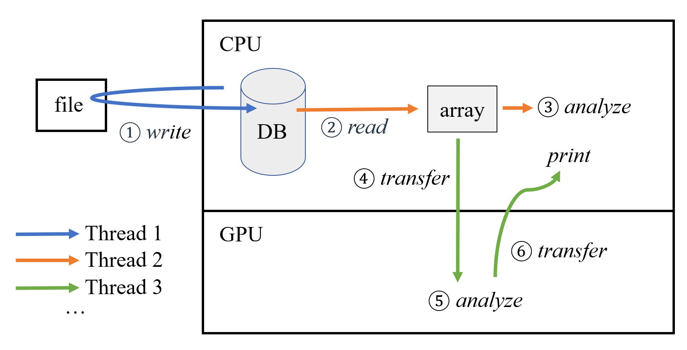
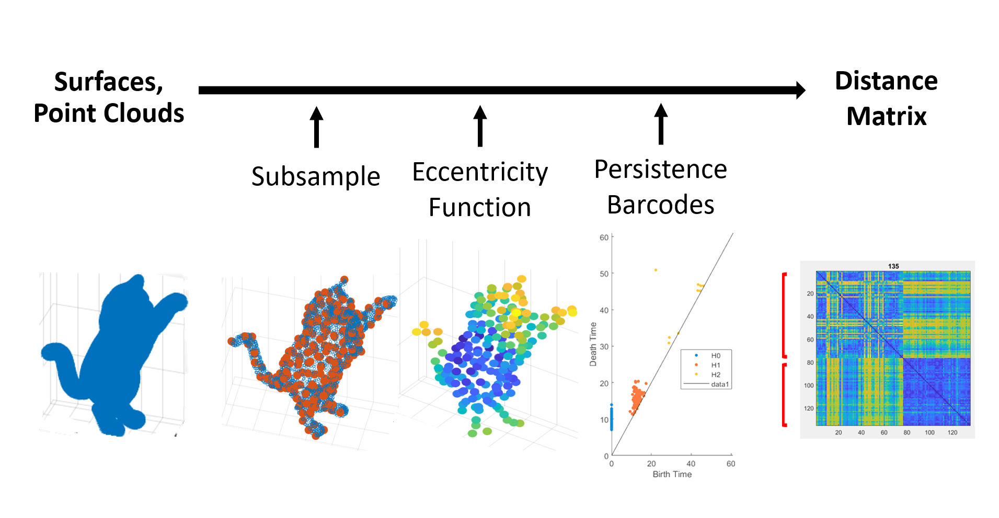

I am an undergraduate student at The Ohio State University, pursuing Dual Degree in Mathematics and Computer & Information Science. Expect to graduate in May 2021. Current interests lie in data analysis, data processing, theoretical application of math concepts. I am still working hard to figure out what I truly want to do.
Recently, I am applying for graduate programs in Computational or Computer Science.
The micro is what we do, the macro is what we put up with. Spend each day trying to be a little wiser than you were. —— Charlie Munger
|  |
Hybrid Transactional/Analytical Processing on CPU-GPU System OSU CSE Department Haiyang Qi (PhD), Yuting Fang Instructors: Prof. Rajiv Ramnath, Prof. Gagan Agrawal Literature Review (Slides) Poster |
|  |
3D Shape Analysis and Classification via Persistent Homology OSU TGDA Group Yuting Fang Instructor: Prof. Facundo Mémoli Slides |
I grow up in Shanghai, China.
Sports is an important part of my life. I was a long-distance runner in my high school's Track and Field team. After having ACL reconstruction surgery in 2018, I switched to swimming. My parents are big fans of hiking and traveling. Check places my family have been.
Podcast is one source of my daily information input. My favorite podcast is Nice Try (Chinese), hosted by my favorite vlogger cbvivi.